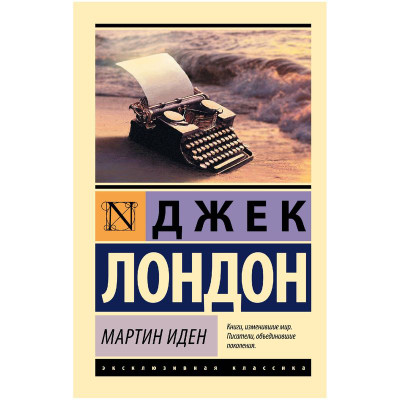
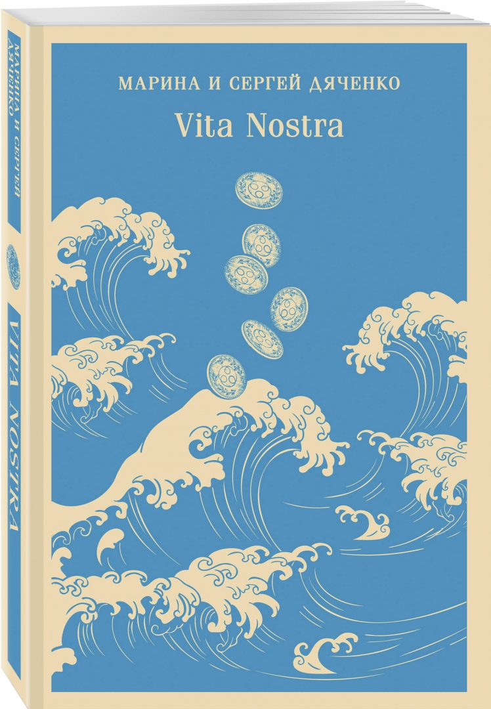
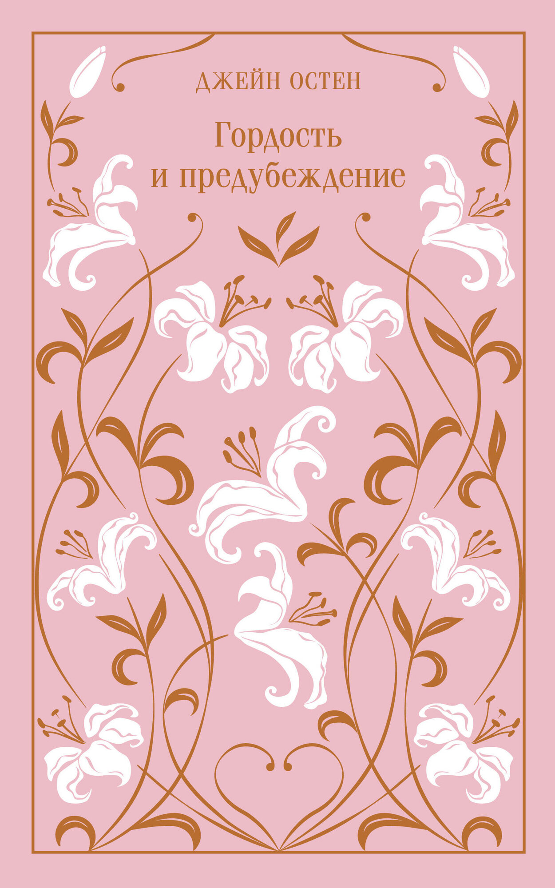
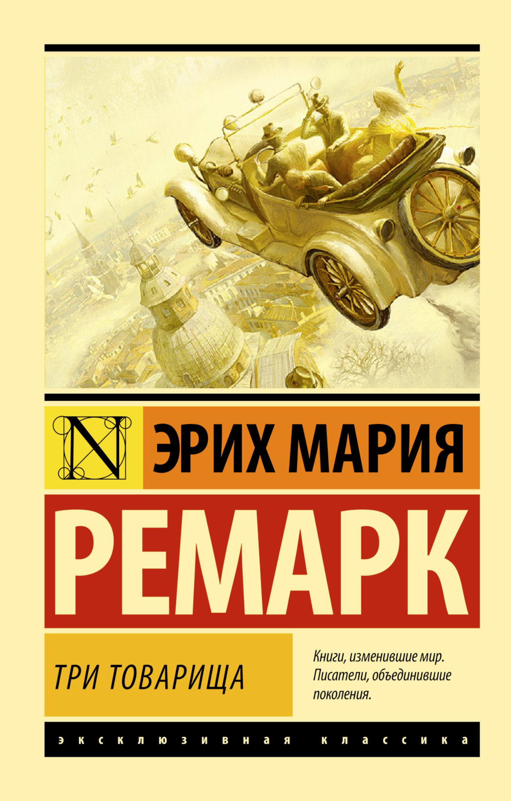
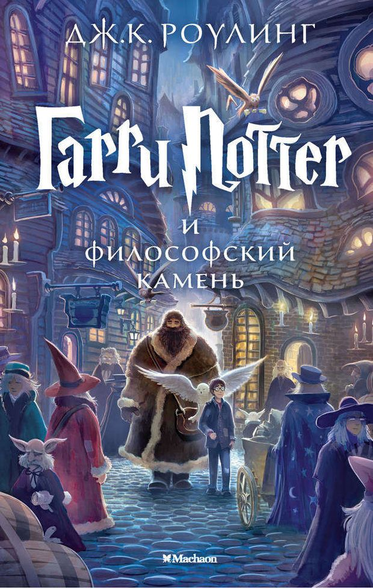

Популярные книги

Мастер и Маргарита
1967
Многослойный и загадочный роман «Мастер и Маргарита», впервые опубликованный полностью только после смерти писателя, погружает нас в атмосферу советской Москвы 1930-х годов, где, казалось бы, нет места ничему потустороннему. Однако именно сюда является со своей свитой Воланд, чтобы провести традиционный весенний бал и выбрать для него королеву. На фоне хулиганских выходок демонических сил разворачивается история Мастера и Маргариты, которая ради спасения своего возлюбленного принимает приглашение от Князя Тьмы. Новая серия классики для поклонников «Магистраль. Главный тренд» в твёрдой обложке. Безупречность стиля, лаконичность, тактильные материалы, цветные форзацы, рисунок на обрезе.

Мартин Иден
1908
Самое известное произведение Дж. Лондона. Книга, которая делит жизнь многих читателей на «до» и «после». Выдающийся роман о человеке из низов, который добился успеха. О поиске места в жизни, тяге к знаниям, муках творчества и муках любви. Историей любви и победы Мартина Идена зачитываются миллионы по всему миру, а его гибель предзнаменовала трагедию поколений начала XX века. Произведение показывает, как человек с силой воли и упорством может многого достичь. Помогает быть сильным в любой ситуации, учит отстаивать свою позицию. Побуждает любить жизнь во всех ее мельчайших проявлениях и жадно хвататься за каждый ее миг.

Vita Nostra
2006
Культовый роман от лучших фантастов Европы, по версии общеевропейской конференции фантастов «Еврокон-2005». «Vita Nostra» переведен на 6 языков, авторы стали лауреатами более 100 премий, отечественных и международных. Жизнь Саши Самохиной превращается в кошмар. Ей сделали предложение, от которого невозможно отказаться; окончив школу, Саша против своей воли поступает в странный институт Специальных Технологий, где студенты похожи на чудовищ, а преподаватели - на падших ангелов. Здесь ее учат... Чему? И что случится с ней по окончании учебы?

Гордость и предубеждение
1797
"Гордость и предубеждение" – шедевр английской литературы, был написан Джейн Остен в 1796-1797 годах и до сих пор не утратил своей популярности. Настолько, что в 2003 году занял вторую строчку в списке "200 лучших книг по версии Би-Би-Си", а в 2009 послужил основой для фантастического боевика "Гордость и предубеждение и зомби" американского писателя-экспериментатора Сета Грэма-Смита. В своем "первозданном" виде "Гордость и предубеждение" не менее актуально. В семье Беннетов пять дочерей и практически никаких перспектив на их удачное замужество… С толком и расстановкой, с тонким юмором и психологизмом Джейн Остен рисует картину того, что у каждой девушки есть шанс встретить своего "мистера Дарси".

Три товарища
1936
Самый красивый в двадцатом столетии роман о любви... Самый увлекательный в двадцатом столетии роман о дружбе... Самый трагический и пронзительный роман о человеческих отношениях за всю историю двадцатого столетия.

Гарри Поттер и философский камень
1797
Одиннадцатилетний Гарри Поттер, сирота, живёт в семье тёти и дяди и даже не подозревает, что он — волшебник. Но однажды в его жизнь вторгается магия: сова приносит письмо из школы чародейства и волшебства Хогвартс. Так начинается история о том, как мальчик со шрамом на лбу открывает для себя мир магии, заводит верных друзей — рыжеволосого Рона Уизли и умную Гермиону Грейнджер — и сталкивается с тёмными тайнами своего прошлого.